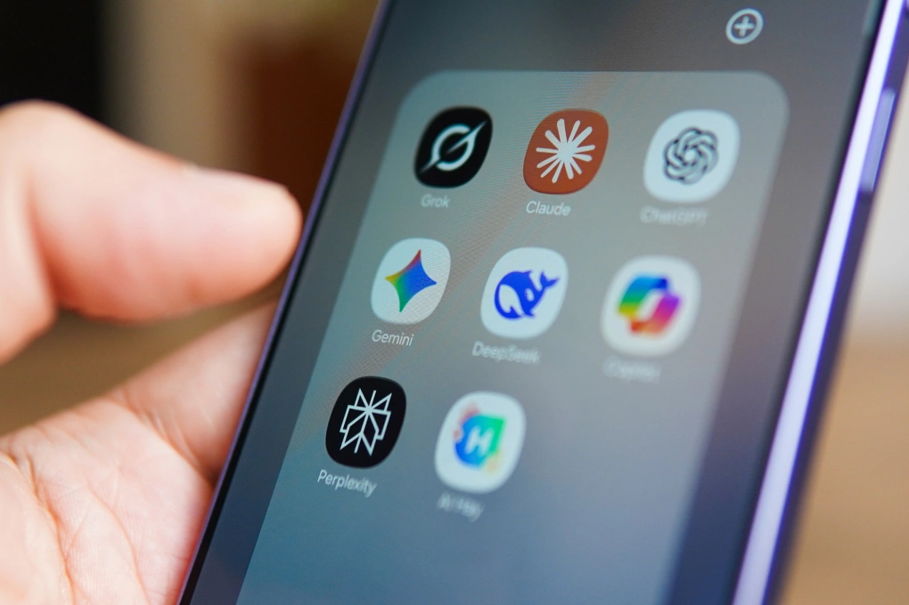

Chính thức: Nhiều nhà phát triển Trung Quốc 'vượt rào' dùng Claude, Gemini
Dù AI nội địa phát triển mạnh mẽ, nhiều nhà phát triển Trung Quốc vẫn tìm cách sử dụng mô hình như Anthropic Claude hay Google Gemini.
Kết quả đầu ra của Claude thường rất chính xác", một lập trình viên họ Song ở Hàng Châu, người thường xuyên sử dụng mô hình của Mỹ cho các quy trình kỹ thuật phức tạp, nói với SMCP. "Ngay cả khi hướng dẫn không hoàn toàn rõ ràng, nó vẫn có thể thực hiện tác vụ tốt và hiếm khi cần sửa lỗi sau đó. Mô hình của Trung Quốc vẫn thường xuyên gặp trục trặc, đôi khi tạo ra code cho những thứ tôi chưa từng yêu cầu".
Những mô hình đến từ Mỹ như Anthropic Claude, OpenAI ChatGPT, Google Gemini bị giới hạn ở Trung Quốc, nhưng đang xuất hiện một "thị trường xám". Trong đó, dịch vụ sử dụng "API ẩn", cho phép chuyển tiếp giao diện lập trình ứng dụng API giúp nhà phát triển địa phương truy cập vào các mô hình AI hàng đầu nước ngoài.
Thực tế, "trạm chuyển tiếp" này đang đóng vai trò định tuyến quyền truy cập mô hình AI ở nước ngoài thông qua máy chủ proxy đặt bên ngoài Trung Quốc. Cách thức này được đánh giá trở thành lựa chọn hàng đầu với nhà phát triển muốn sử dụng AI của Mỹ cho các tác vụ như lập trình, gỡ lỗi và tạo hình ảnh.

Logo các ứng dụng AI Grok, Claude, ChatGPT, Gemini, DeepSeek, Copilot, Perplexity, AI Hay trên điện thoại, tháng 3/2025. Ảnh: Lưu Quý
Chẳng hạn, trên một số sàn thương mại điện tử Trung Quốc như Taobao hay Xianyu, nhà cung cấp dịch vụ trung gian quảng cáo quyền truy cập Claude Opus bản quyền, gói đăng ký Claude Code không giới hạn và mô hình chính thức 1:1 không bị giảm hiệu năng. Hầu hết quảng cáo khả năng hỗ trợ cửa sổ ngữ cảnh một triệu token, truy cập mạng nội địa không cần VPN và khả năng tương thích với các công cụ như Cursor, VSCode và OpenClaw. Một người bán hàng trên Xianyu thậm chí hoàn thành hơn 2.200 đơn hàng trong một tuần.
Nhiều nền tảng chuyển tiếp quảng cáo giá API thấp hơn giá chính thức. Ví dụ, KoalaAPI rao quyền truy cập GPT-5.4 với giá 1,5 USD cho mỗi triệu token đầu vào, trong khi giá niêm yết 2,5 USD.
Một nhà cung cấp dịch vụ họ Zhang ở Bắc Kinh đã nhận được 1.000 đơn hàng dịch vụ chuyển tiếp Claude với tỷ lệ đánh giá tích cực 83%, thậm chí tự dựng cụm máy chủ chuyển tiếp sau khi cảm thấy thất vọng với các giao diện dịch vụ không chính thức vốn không ổn định, thường xuyên gây ra giới hạn tốc độ hoặc làm sai lệch cuộc hội thoại dài.
Theo Tom's Hardware, các "trạm trung chuyển" hoạt động công khai trên nhiều nền tảng như GitHub, Taobao và Telegram. Tuy nhiên, các nhà nghiên cứu tại Trung tâm An ninh Thông tin CISPA Helmholtz (Đức) kiểm tra 17 dịch vụ proxy từ Trung Quốc và phát hiện tình trạng gian lận. Chẳng hạn, quyền truy cập proxy được quảng cáo là "Gemini-2.5" chỉ đạt 37% điểm trên một bài kiểm tra chuẩn y tế, trong khi API chính thức đạt gần 84%. Hoặc khi người dùng muốn sử dụng Claude Opus nhưng có thể nhận phản hồi từ mô hình giá rẻ hơn như Sonnet, Haiku hoặc Qwen, với kết quả đầu ra bị dán nhãn lại một cách gian lận.
Trong khi đó, theo nghiên cứu do chuyên gia Zilan Qian thuộc tổ chức Oxford China Policy Lab công bố đầu tuần trước, dịch vụ proxy API ở Trung Quốc thậm chí bán lại quyền truy cập vào Claude của Anthropic với giá bằng 10% giá chính thức. Cụ thể, các nhà điều hành ở thượng nguồn đăng ký hàng loạt tài khoản Anthropic bằng cách tận dụng tín dụng API miễn phí, khai thác chiết khấu của doanh nghiệp hoặc chia nhỏ gói đăng ký Max trị giá 200 USD cho hàng chục người dùng. Theo Qian, một số tài khoản tham gia vào hệ thống mà không mất phí, được mua bằng thông tin thẻ tín dụng bị đánh cắp.
Trên thế giới, các dịch vụ cơ sở hạ tầng chuyển tiếp (relay) dần phổ biến. Chẳng hạn, đầu tháng 5, doanh nhân tiền số Justin Sun thông báo trên X rằng sẽ ra mắt nền tảng chuyển tiếp AI của riêng mình. Ngay sau đó, WLFI, một công ty tiền số tại Mỹ, công bố dịch vụ tương tự có tên WorldRouter, hứa hẹn cung cấp quyền truy cập vào hơn 300 mô hình AI toàn cầu thông qua giao diện API thống nhất. Dù vậy, họ cũng đối mặt với những hạn chế ngày càng nghiêm ngặt do các công ty phát triển mô hình đặt ra.
Với thị trường Trung Quốc, Anthropic cũng đang mạnh tay hơn. Từ tháng 9 năm ngoái, công ty tăng hạn chế quyền truy cập API với hầu hết mô hình, yêu cầu số điện thoại, thẻ thanh toán nước ngoài và địa chỉ thanh toán không phải từ Trung Quốc.
"Trước giữa tháng 4, các dịch vụ chuyển tiếp vẫn tương đối dễ sử dụng", Zhao, một người chuyên bán quyền truy cập API Claude thông qua chợ đồ cũ Xianyu, cho biết. "Sau đó, việc khóa tài khoản trở nên nghiêm trọng hơn nhiều, đặc biệt là bước kiểm tra danh tính (KYC). Một khi tài khoản bị khóa, phí đăng ký được lưu trữ trong đó coi như bị mất".
Bình luận 3
Thật sự Ai Trung Quốc rẻ nhưng không chuẩn xác như Chat GPT, Gemini, Claude...
Tôi dùng Claude 4.7 và Chat GPT Codex. Phải nói đáng kinh ngạc, tăng năng suất công việc gấp hàng chục lần h không thể thiếu chúng. Tôi đã tải vài mô hình Trung Quốc quảng cáo hiệu suất gần bằng nhưng xóa ngay lập tức cực kì chậm, lag và trả lời sơ sài như mấy con AI cách đây 2 3 năm. Riêng lm video mấy con của Trung Quốc rất ok.
Các lãnh đạo Huawei cũng dùng Iphone, Ipad, Apple Watch và smartphone, tablet , smartwatch của Huawei đã đánh bại các sản phẩm của Apple và đứng đầu tại Trung Quốc.